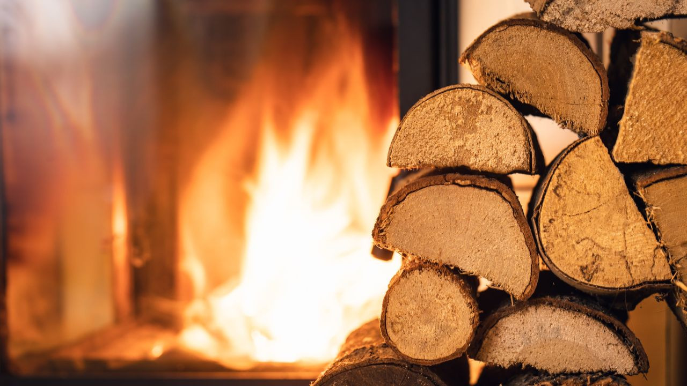

La méthode d'allumage par le haut consiste à placer les bûches les plus grosses en bas, puis à construire au-dessus une petite pile de bois d'allumage et d'allume-feux. Le feu descend progressivement vers les bûches principales.
Préparez le foyer
Vérifiez que l'arrivée d'air est ouverte et que le conduit tire correctement. Placez deux ou trois bûches sèches en laissant circuler l'air entre elles. Une bûche adaptée à la largeur du foyer facilite une combustion régulière.
Construisez le petit foyer
Disposez quelques morceaux de bois d'allumage en croisant les couches, puis placez un allume-feu écologique au sommet. Évitez de tasser : l'air est nécessaire à la flamme.
Allumez et laissez faire
Allumez l'allume-feu et laissez la flamme progresser sans recharger trop tôt. Une fois les braises installées, ajustez l'arrivée d'air selon les consignes de votre appareil. Utilisez toujours un bois sec et respectez les instructions du fabricant.
Articles récents
Qu'est-ce qu'un stère de bois ? · Quelle longueur de bûche pour mon appareil ? · Bien stocker son bois
Tous les conseils ↗